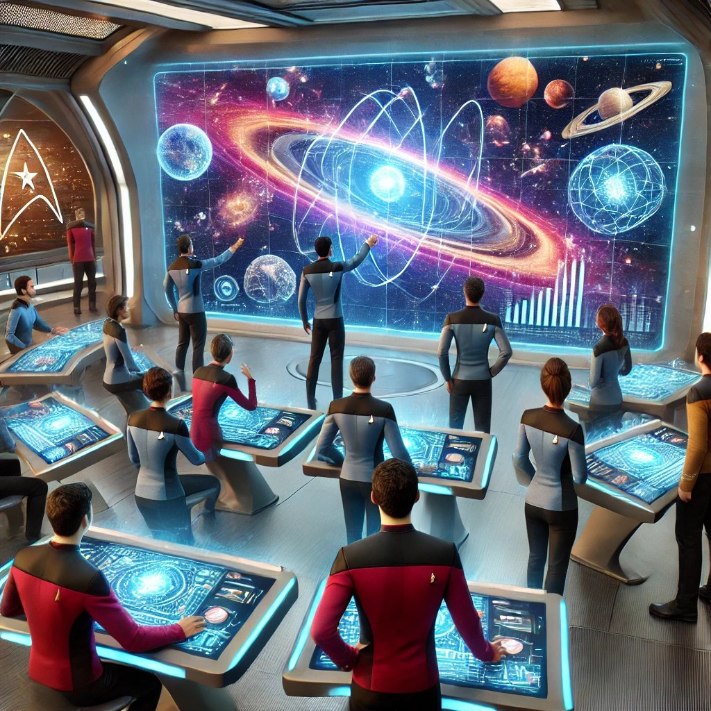
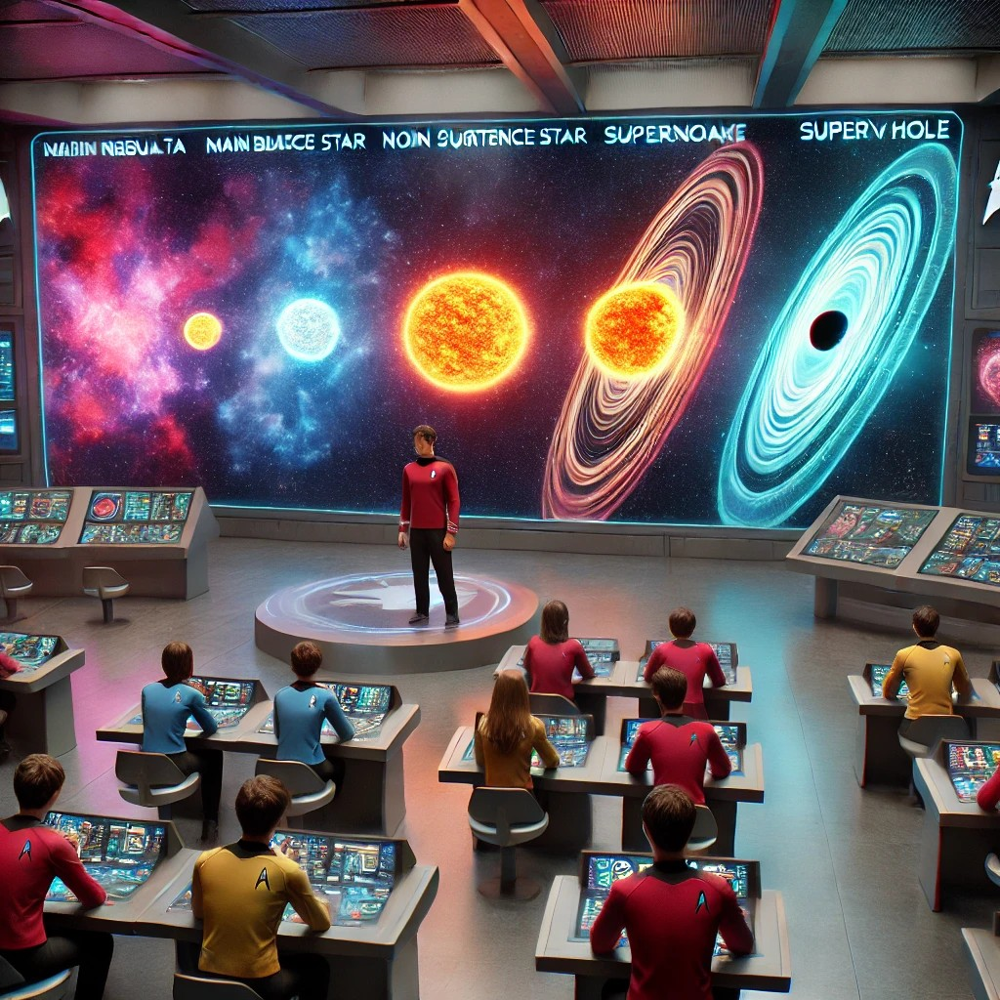
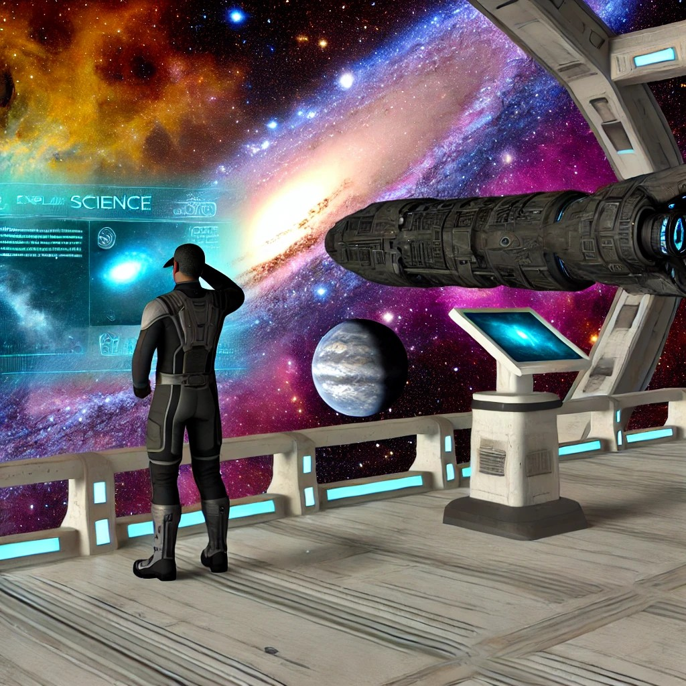
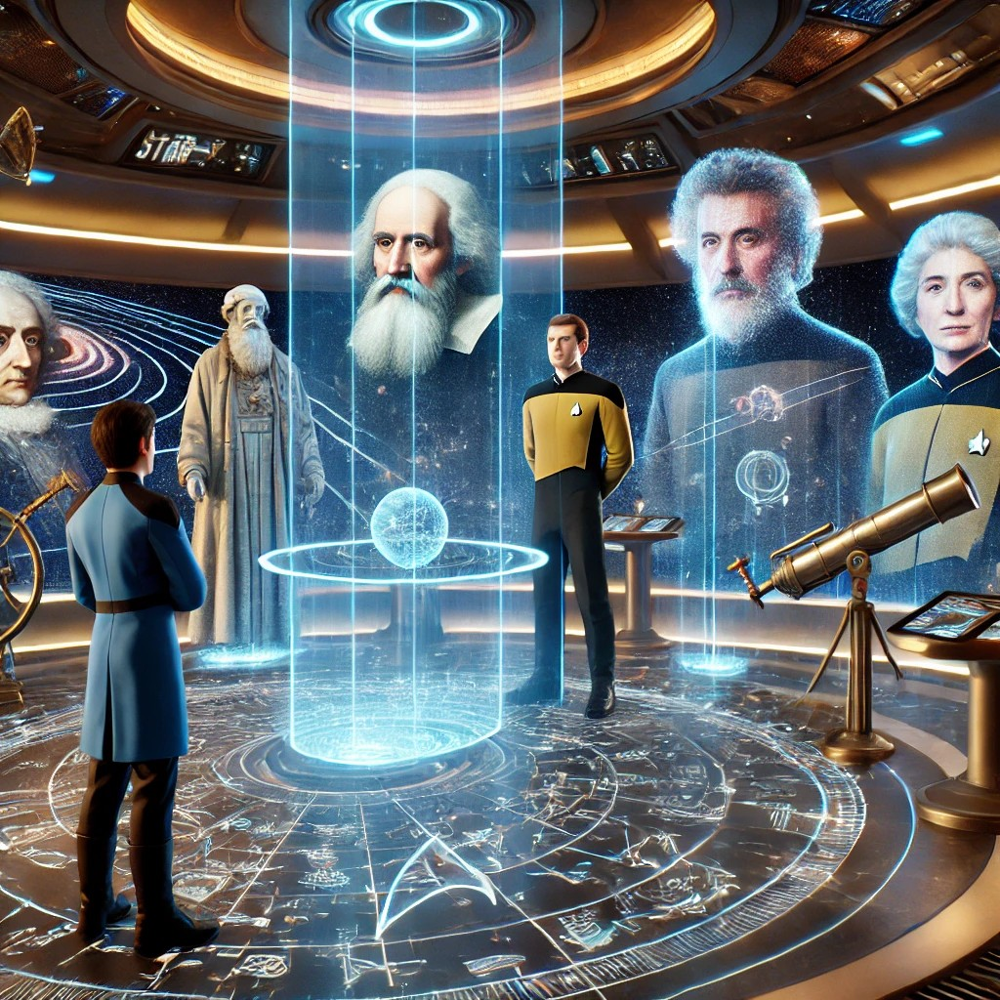

Expedición 1 Un viaje por el Sistema Solar
¡Cadetes!
En esta actividad serán astrónomos y artistas espaciales, creando una infografía que revelará los secretos y la belleza de nuestro sistema solar. Imaginen explorar el interior del Sol, descubrir los misterios de cada planeta y desentrañar las historias de las lunas más intrigantes. Sus infografías serán más que datos, serán una fuente de inspiración, invitando a otros a maravillarse ante la grandeza del cosmos. Muestren su creatividad, usen herramientas visuales y palabras para contar esta historia cósmica.
El futuro de la exploración espacial está en sus manos, y sus infografías serán nuestra guía hacia nuevos horizontes de conocimiento.
¡Adelante, cadetes, que sus infografías brillen como estrellas en el cielo y nos lleven hacia lo desconocido!
¡Recuerda!
- Precisión de la información
- Claridad de la infografía
- Creatividad en el diseño

Expedición 2 El misterio del origen del Universo
¡Cadetes!
Hoy, como miembros de la Flota Estelar, tienen una misión crucial: investigar los orígenes del universo y el enigma del Big Bang. Desde la nave estelar USS Enterprise, exploraremos las evidencias científicas que revelan cómo comenzó todo: la radiación de fondo de microondas, el corrimiento al rojo de las galaxias, y más.

Se organizarán en equipos científicos para analizar cada evidencia, usarán su ingenio y formación para desentrañar estos misterios, y compartirán sus descubrimientos con sus compañeros. ¡El conocimiento es nuestra herramienta más poderosa, y juntos, descubriremos los secretos del universo! ¡Larga vida y prosperidad!
Expedición 3 La vida de una estrella
¡Atención, cadetes!
Hoy nos embarcamos en una misión especial que nos llevará más allá de las fronteras del conocimiento estelar. Como miembros de la tripulación de la USS Enterprise, tenemos la tarea de explorar uno de los mayores misterios del cosmos: la vida y evolución de las estrellas.
Nuestra misión no es solo observar las estrellas, sino comprender profundamente su ciclo de vida, desde su nacimiento en nebulosas cósmicas hasta su transformación en gigantes rojas, supernovas y, finalmente, en los poderosos agujeros negros. A lo largo de este viaje, utilizaremos las herramientas más avanzadas de la Flota para mapear la evolución estelar y crear una línea de tiempo visual que capture el destino final de estas majestuosas entidades.

Es una oportunidad para explorar los confines del espacio y del conocimiento humano- ¿Están listos para aceptar este desafío estelar, cadetes? ¡
¡Adelante, hacia lo desconocido y más allá!
Expedición 4 Ecos del Origen: Implicaciones del Universo en Expansión
¡Cadetes!
Como oficial de ciencias a bordo de una nave estelar de la Federación, te encuentras explorando las fronteras del espacio y enfrentando preguntas fundamentales sobre el origen y el destino del universo. En esta misión, investigarás teorías cosmológicas como el Big Bang y explorarás las evidencias científicas que sustentan nuestra comprensión del cosmos.

Además, reflexionarás sobre el papel de lo divino en la creación, considerando si existe una fuerza superior detrás del universo o si todo puede explicarse a través de la ciencia. Tu tarea es elaborar un informe reflexivo que combine ciencia, filosofía y espiritualidad, ayudando a nuestra tripulación a entender mejor el vasto y misterioso universo que exploramos. ¡Adelante en tu misión de descubrimiento!
Una visita a la holocubierta: entrevista a un astrónomo famoso
Entra en la Holocubierta de la USS Enterprise, donde podrás interactuar con astrónomos legendarios de la historia de la Tierra como Galileo, Edwin Hubble, Carl Sagan y Vera Rubin. Utiliza esta experiencia inmersiva para realizar una entrevista ficticia, explorando sus vidas, teorías y descubrimientos que han dado forma a nuestra comprensión del universo.

A través de esta actividad, no solo aprenderás sobre la historia de la astronomía, sino también cómo estos científicos continúan influyendo en las misiones actuales de la Flota Estelar. Prepárate para embarcarte en una misión de exploración del conocimiento cósmico, donde el pasado y el presente se encuentran en un viaje al vasto cosmos. ¡Activa la Holocubierta y comienza tu aventura!